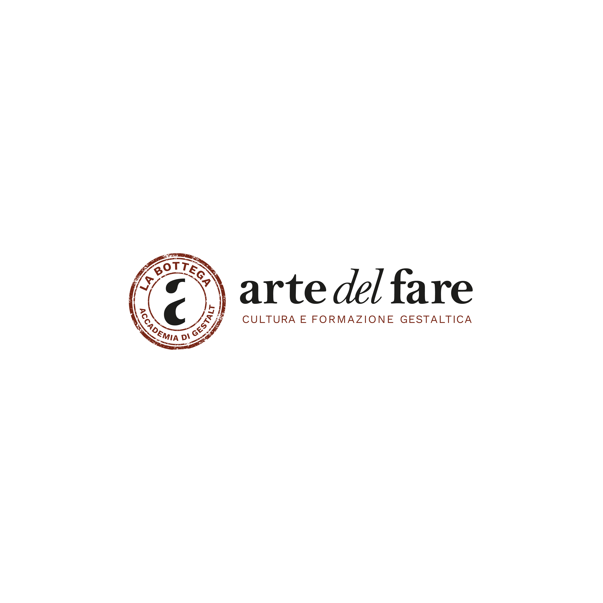

La Bottega – Arte del Fare
Programma sostenitori
Un modo per sostenere le attività della Bottega e partecipare alla crescita della sua comunità.
Tre modi di partecipare
Le qualifiche
Dal contatto al badge
Come funziona
- Compila la richiesta
- Ricevi le indicazioni per la donazione volontaria
- La Bottega verifica manualmente il bonifico
- La richiesta viene approvata
- Ricevi il badge annuale
Partecipa
Sostieni La Bottega
La registrazione sarà disponibile qui. Nessun dato viene raccolto o salvato su questo sito.
Registrazioni in apertura
Scrivi alla Bottega